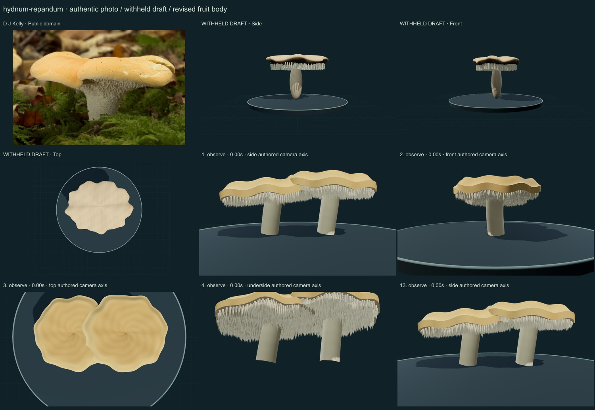
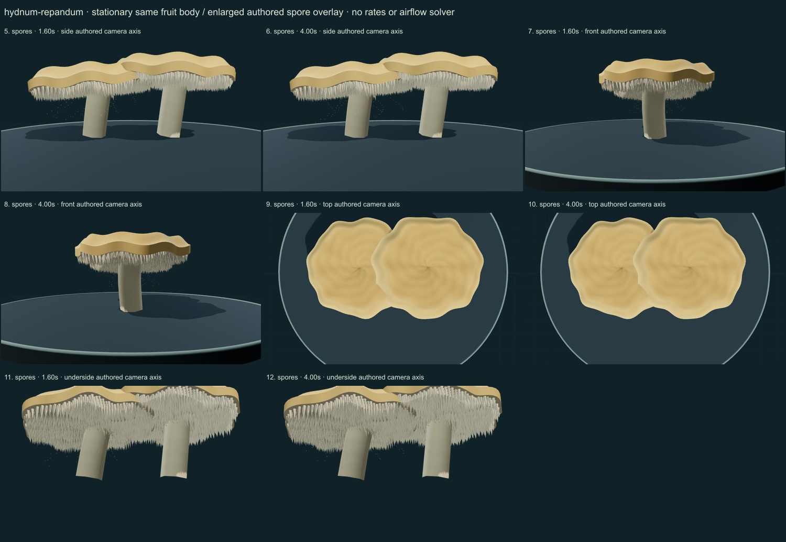

PhenoVoxel Archive · v0.6.25 · October25,2026
Wood hedgehog
293 records after verified publication. Seven saved drafts held;257 missing to550, including250 without drafts. Release register.
Actual D J Kelly public-domain photograph and selected Naturalis morphology compared. Primary Hydnum diversity/taxonomy text warns of overlapping macromorphology. The consulted Commons page leaves original geography unspecified, so the photograph is explicitly a source-labelled macro reference, not proof of a narrow molecular determination.
D J Kelly · Public domain. Source-labelled macro phenotype; original geographic provenance is unspecified on the consulted Commons page. Modern Hydnum species overlap morphologically. This image does not independently establish a narrow molecular species determination. Resized inside 1000 px, flattened and JPEG encoded; no generative alteration.
Exact creator, source/license links and original/derivative checksums are retained in the linked data. The2025 Hericium paper is linked as a scholarly reference; its NC-ND figures are not reused. Additional copyrighted treatments/figures are not redistributed or sampled into material textures.
Two selected irregular rolled buff caps on shorter robust pale stipes bear dense downward teeth and partial tooth cues descending around the upper stipes. No woody bracket support is substituted for this terrestrial ectomycorrhizal fungus.
Muted apricot/buff numerical cap pigment, matte pale supports and geometric lower teeth distinguish it from translucent Pseudohydnum.
Remaining: Cap ripples and tooth placement are still regular, stipe/edge structure is simplified and proportions unmeasured. Original photo geography and narrow-species identification remain unresolved; microscopic traits, mycorrhizae and tissue optics are not simulated.
Stationary same bodies with an enlarged spore drift overlay. No locomotion, fruit-body growth, mycorrhizal physiology or measured airflow.
Partly stylized, unmeasured original educational reconstructions. Fine anatomy, age variation, tissue optics, dimensions and physiology remain incomplete. Enlarged spore dots are a teaching overlay with authored timing, not measured release, Buller-drop mechanics or an airflow solver. No independent specialist validation, scientific certification or accuracy percentage.
The underside camera temporarily hides contextual platform/grid. Contextual wood is authored support artwork, not a scanned host or proof of host specificity.
13 actual final nonblank main-viewer states individually inspected on two labelled sheets, with authentic photograph and withheld-draft comparison. Whole-body side/front/top, unobstructed underside and two representative overlay times per axis; qualitative author assessment, not independent specialist review.


Partly stylized, unmeasured original educational reconstructions. Fine anatomy, age variation, tissue optics, dimensions and physiology remain incomplete. Enlarged spore dots are a teaching overlay with authored timing, not measured release, Buller-drop mechanics or an airflow solver. No independent specialist validation, scientific certification or accuracy percentage. Prior285 species objects, including credited wolf/tiger meshes, are unchanged. Species-complex caveats remain visible. Recorded occurrences are not native ranges; legacy Protista/Monera are reporting conveniences.
Original geometry/controller MIT. Authentic photo portions retain the exact credited license; model-only frames contain original rendered geometry.
Exact findings, source scopes and screenshot hashes